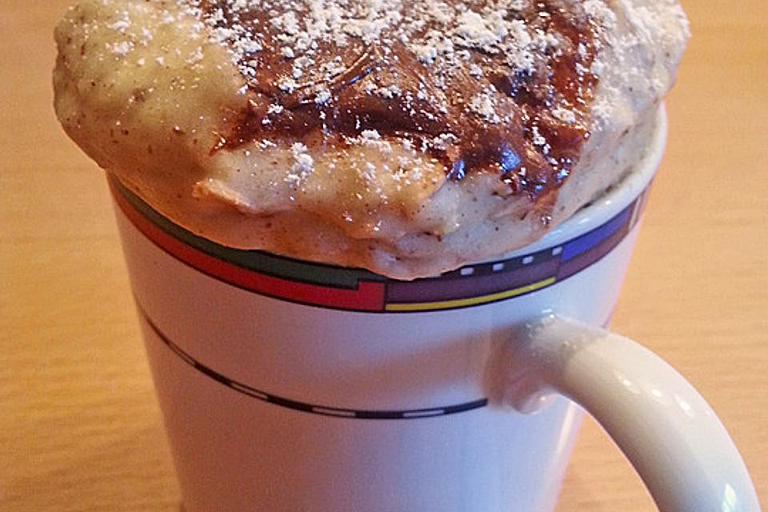

Oatmeal Mug Cake
 1 Portion
1 Portion-
 chefkoch.de
chefkoch.de
 Sweet
Sweet
 549 kCal
·
11 g Eiweiß
·
20 g Fett
·
80 g Kohlenhydrate
549 kCal
·
11 g Eiweiß
·
20 g Fett
·
80 g Kohlenhydrate
Haferflockenkuchen aus der Mikrowelle

1 ELZucker3 ELMehl2 ELHaferflocken¼ TLBackpulver⅛ TLSalz¼ TLZimt
Zunächst die trockenen Zutaten in einer Tasse vermischen.
5 ELMilch1 ELÖl
Die flüssigen Zutaten dazugeben und alles gut vermengen.
1 ELNutella
Zum Schluss Nutella (oder einen anderen süßen Brotaufstrich) darauf geben.
Ca. 80 Sekunden bei 700 W in der Mikrowelle backen.